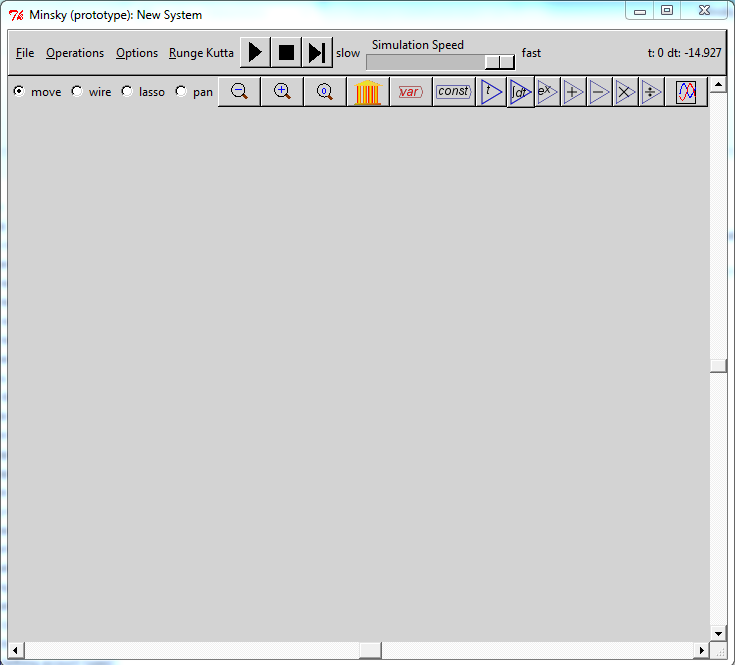

Welcome to Minsky
Minsky is a visual tool for designing dynamic, monetary models of the economy. The Minsky interface looks like this:

If you' seen a systems dynamics program beforehand, this interface should look familiar and your primary question would be how does Minksy differ from all the programs you already know? If you've never seen a system dynamics program beforehand, you will be wondering how you can possibly build a model using this interface?